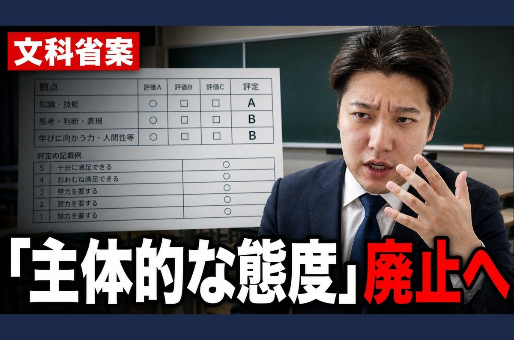
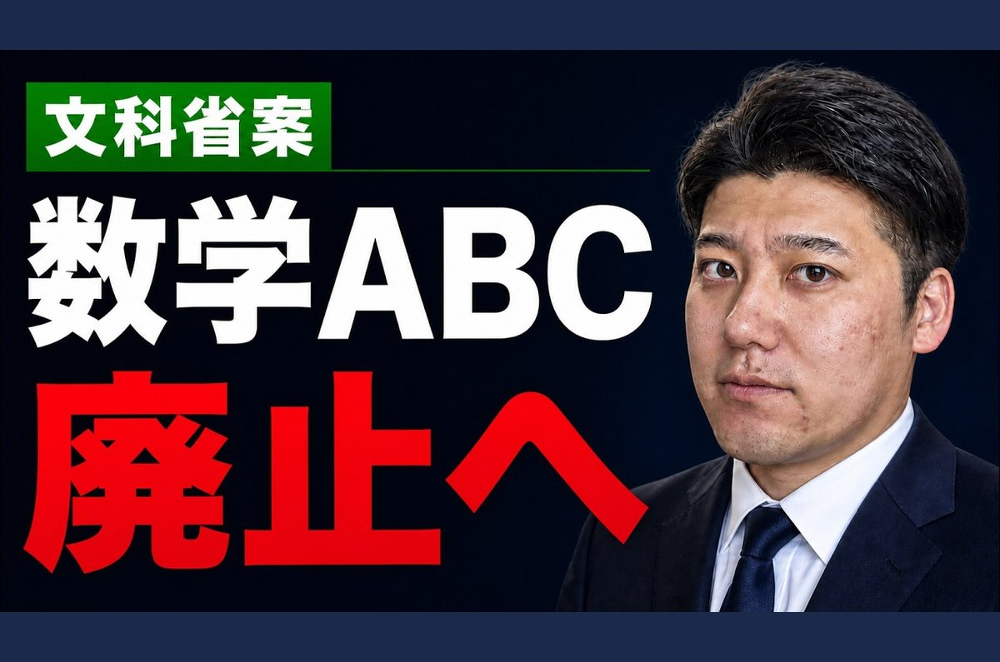
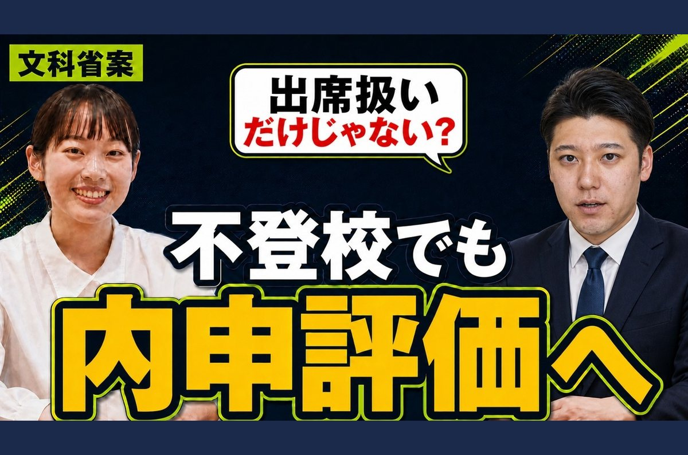

LINEはチャットなので、メールの文章をそのまま短くして流すと読まれません。3本のピックアップは横スワイプのカードと相性がよいので、カルーセル1通にまとめます。吹き出しを増やすと通数課金が増えるため、必ず1通に収めます。



| 通知の文言 | 【Edu-biz通信】通知表の「態度」評価が変わります ロック画面に出るのはこの一文だけ。開くかどうかがここで決まるので、号数ではなく中身を書く（Lステップでは「代替テキスト」欄） |
|---|
| 画像 | https://smart-juku.syuni.jp/demo/edubiz-tsushin/vol01/images/th1-line.jpg |
|---|---|
| タイトル | 通知表の「態度」評価が根本から変わる 17字／上限40字 |
| 説明 | 8月4日の文科省案で具体化。A・B・Cの独立した観点として評定しない方向です。（12:02） 40字／上限60字 |
| ボタン | 動画を見る → https://www.youtube.com/watch?v=a0YUNzc8a3U |
| 画像 | https://smart-juku.syuni.jp/demo/edubiz-tsushin/vol01/images/th2-line.jpg |
|---|---|
| タイトル | 【数学再編】A・B・C統合で何が変わる？ 19字 |
| 説明 | 高校数学の選択科目を1つに再編する案。数学Ⅰ・Ⅱ・Ⅲは残る想定です。（13:06） 37字 |
| ボタン | 動画を見る → https://www.youtube.com/watch?v=DhD2p_t2zHk |
| 画像 | https://smart-juku.syuni.jp/demo/edubiz-tsushin/vol01/images/th3-line.jpg |
|---|---|
| タイトル | 不登校の成績評価が変わる？「4※」と内申 19字 |
| 説明 | 出席扱いの先の評価方法を整理。「4※」は通常の評定4とは別物です。（24:36） 36字 |
| ボタン | 動画を見る → https://www.youtube.com/watch?v=-cCJrVi7p0o |
| 画像 | 紺一色の背景（または images/ogp.jpg を1.51:1に調整して使用） |
|---|---|
| タイトル | 今号のダイジェストを読む 11字 |
| 説明 | 3本の要点と、今号のその他の動画。Edu-biz通信 vol.01 30字 |
| ボタン | 記事を読む → 記事ページのURL |